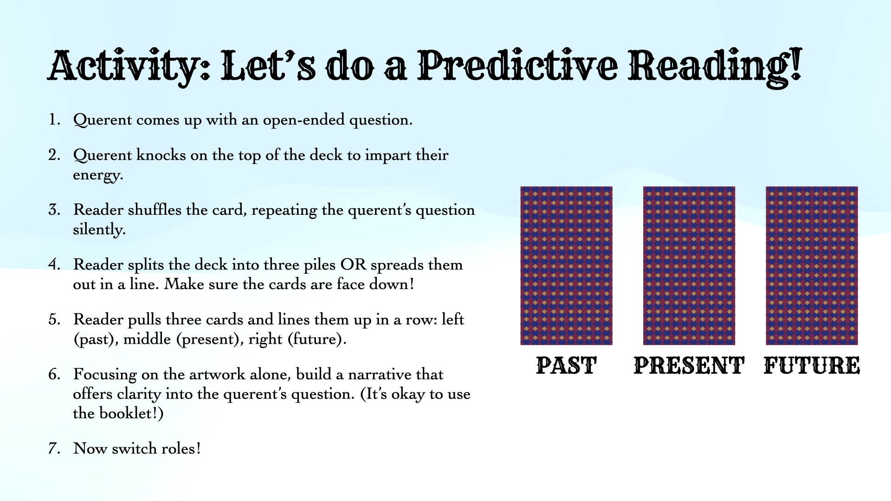

Thesis Weekly Update #7
March 11, 2024: Demo Day Feedback



Faculty Feedback
Accessible Card Design Feedback
- Check that the text font is readable - there are camera checkers for accessibility, look into Seeing AI
- Check that there is good color contrast in the imagery (quality of printing paper impacts color saturation)
- Make the cards tactile - look into embossing
- Add a notch to the back of the cards so users immediately know which one is right side up
Digital Component Feedback
- Add QR codes to card so booklet descriptions can exist on the web - make screen reader accessible
- Make visual description of card imagery more distinct - maybe put this separately before the narrative
Videos Feedback
- Helpful for learning how to read cards in layouts
- They should be 30-60 seconds long max
Future Presentation / Thesis Showcase Feedback
- Create a poster with the card imagery to draw audience in - set up on an easel
- Highlight 5-7 key unique value proposition of my card deck
- Emphasize the learning design approach to my tarot card design, as well as the unique value of a user-empathy, narrative-driven approach to learning what each card means
- Have audience members read for each other as opposed to me reading for them first
My Reflections
My main objective is to make tarot reading more approachable for novice readers. I want to go about this by designing cards and descriptions that empower the reader to draw from their own intuition when reading for a querent. I believe that the more a reader can trust their intuition, the more readily they can dive into giving solid readings for other people. Additionally, the act of reading for others will help readers memorize the cards faster. I think of it as a two-way street: you can only really get better at reading tarot if you consistently read for others (or yourself); but to achieve the confidence to read for others, you need the learning experience of to be scaffolded well. The learning scaffold itself is two-fold as well: gaining familiarity of each card’s meaning and building a narrative from cards in layouts. So to empower novice readers to give readings for others on the get go, I want to hold their hand more with that learning scaffold. My core solution is to (1) swap out prescriptive card meanings with brief narratives that situate the user within the literal card and (2) create a shorthand key system of hand gestures that impart actionable takeaways from each card.
I feel confident about the direction of my materials so far. I’m aiming to have all the cards done, but I personally care more about the Minor Arcana, since those cards tend to be harder to learn. I’m drawing these insights from the interviews I conducted last semester, though I’m hoping to find more literature to back my claims. I really like the idea of making the cards more accessible, specifically with adding the notch for right-side up readings and double checking text readability and image color contrast. I was thinking of having a screen-reader accessible PDF version of the booklet available online in lieu of a website, just because I want to dedicate more time to the cards and learning experience. If I go the website route, it would essentially be a version of the booklet that also includes visual descriptions of the cards. The website could also be a place for me to host my quick 30-60 second videos of how-to-do-readings, but I was also considering posting them on an Instagram page. There’s also the option of creating a website to advertise the card deck, but that will come after everything else.
I definitely want to focus on onboarding novice readers to do tarot readings with little to no prior knowledge. In addition to having the booklet available, I think I’ll print out a “cheat sheet” with the seven different hand gestures and what the key message for each one is. That way, if readers struggle to surmount the step between describing what the individual card means to how it answers the querent’s question, they can glance at the sheet for guidance. I also want to break down the steps of giving a reading and will likely rely on my own methods, as well as the methods followed by my expert interviewees. For live demos, I envision this as a numbered list of instructions (similar to the slide I had up during Demo Day), but I want to explore other options as well. For those who are learning independently, I would have those quick videos of sample readings available.